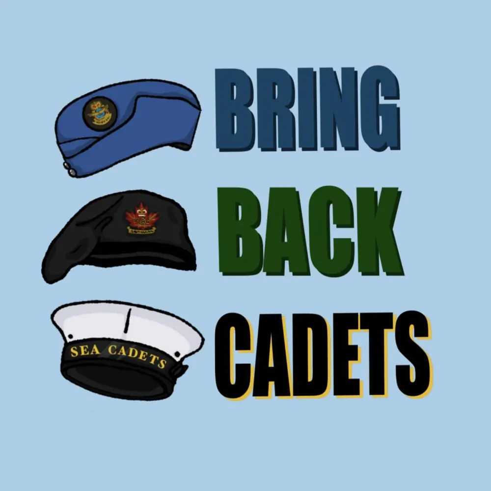
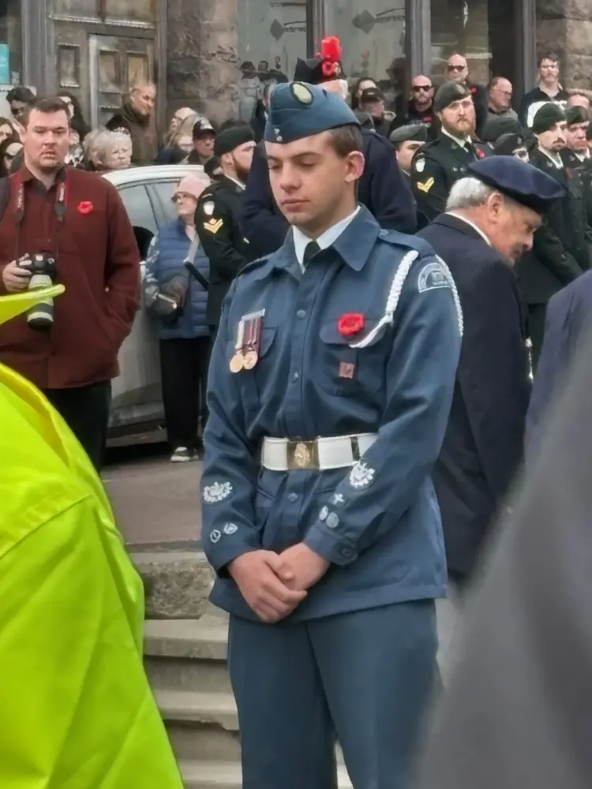

Cadet leadership
Served as acting squadron commander at 661 Squadron and subsequently transferred to 870 Vampire Squadron as a Warrant Officer Second Class. My responsibilities have included mentoring more than 15 cadets on parade nights.
Youth advocacy, cadet leadership and sport
Served as acting squadron commander at 661 Squadron and subsequently transferred to 870 Vampire Squadron as a Warrant Officer Second Class. My responsibilities have included mentoring more than 15 cadets on parade nights.
Served as a Flight Sergeant Instructor at Blackdown Cadet Training Centre. I led a platoon for two weeks and subsequently spent four weeks supporting training delivery and other instructional requirements. My work included delivering formal lessons and mentoring course cadets.
Co-founded Bring Back Cadets in response to concerns about reductions in cadet training opportunities. The campaign gathered personal stories and engaged with media and public stakeholders to highlight the program's value. On November 24, VOCM reported my response to the federal government's announcement of additional funding, including my call for clear communication about when activities would resume.
VOCM: cadet funding coverage ↗ · New Country NL coverage ↗
As part of Bring Back Cadets, I created a public petition calling for improvements to sexual assault reporting procedures within Canadian cadet programs.
Received this recognition for cadet performance, leadership and physical development.
Recognizes sustained service in the Air Cadet Program.
Recognized for instructional performance at the annual ceremonial review.
Recognized for physical fitness at the annual ceremonial review.
Recognized for supporting the Poppy campaign.
Represented Brockville Rowing Club at the Nancy Storrs Ontario Indoor Rowing Championships on February 28, 2026. My recorded result was 7:53.0.
Official rowing results (PDF) ↗I have played rugby since Grade 9, including as a multi-role flanker.
Completed the Idea Workshop, a professional learning experience focused on developing and sharing ideas with communities and wider audiences.

